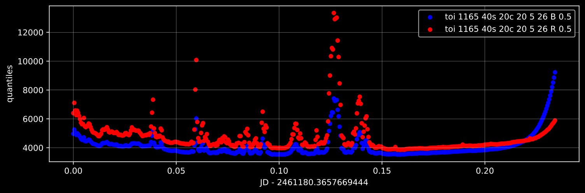
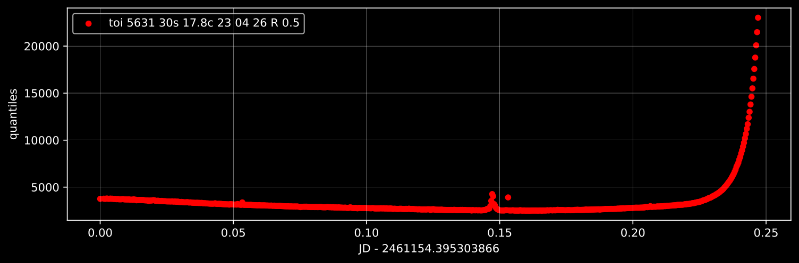

Diagnostics
Processing records more than its results. As each stage works through an image it also measures a handful of numbers describing how that stage went – how many stars were found, how well the astrometric solution fit, how bright the sky was – and files them in the project’s database against the image and colour channel they came from.
These are worth knowing about for three reasons. They are the quickest way to see whether a night’s data is any good; they are what the pipeline itself consults when it has to choose one image out of many; and when something looks wrong in the final light curves, they are usually where the explanation is.
What gets measured
Each value is stored against one image, one colour channel and one named diagnostic, so every number below exists separately for every channel of every frame.
From calibration
pixel_qNNNQuantiles of the calibrated pixel values, ignoring masked pixels –
pixel_q999is the 0.999 quantile, and so on. Which quantiles are recorded is configurable, and the names are created as needed, so this is the one family whose members are not fixed in advance. Taken together they describe the brightness distribution of the frame, which is the fastest way to spot cloud, moonlight or a badly wrong exposure.For example, the median of the pixel values (quantile 0.5) is usually a good measure of the brightness of the sky, since less than half of the pixels in your image should be covered by stars. A perfectly clear sky is darker than clouds, which can reflect light coming from the ground or the moon. Clouds also usually move around, causing the brightness to change over time. So if you see a graph of the median that jumps up and down a lot, that is a good indication that you were not observing in a clear sky.
If you are using a color camera, another thing that can indicate clouds is the color of the sky. Clouds are white, while the sky is blue (even at night). So if you see that the ratio of the median of the red channel to the blue channel is increasing, that can also indicate clouds. The graph below is an example of a night where clouds were present most of the time, but it cleared up near the end.

One thing to keep in mind though is that the brightness and color of the sky is not uniform. The horizon is brighter and could also be less blue than zenith due to light pollution. As you get closer to daylight the brightness can similarly change. As a result, as your telescope tracks the field of sky you are observing it will move further and closer to the horizon, which will also lead to changes in the brightness and color of the sky that can be similar to what clouds do. However, those changes are slow and smooth, unlike clouds. The graph of the median below is an example of observations that happened during a clear night, where dawn is approaching at the end.

{kind=link}
{kind=link}
From finding stars
num_extracted_srcHow many sources the extraction found.
There is no good absolute value to compare against – it depends entirely on your field, your optics and how deep your exposures go. What matters is how it behaves relative to the other frames of the same field. A frame with far fewer stars than its neighbours had something in the way like clouds or stray light drowning out the stars.
A count far above the usual is the more misleading case, because more sources sounds like better data. Often it can mean that the detection threshold has been set low enough to start finding noise, in which case the extra “stars” will not match the catalog – which is what
matched_fractionbelow will tell you.
From plate solving
ra_center,dec_centerWhere the middle of the frame actually points, according to the astrometric solution, as opposed to where the mount believed it was pointing.
Plotted against time these trace how the field wandered over a run. A slow crawl in one direction is ordinary tracking error; a sudden step means something moved the telescope, or the mount flipped sides of the pier. Either matters more than it might seem, because your telescope + camera system has different sensitivity to light coming from different directions, and as stars wander around the image their brightness will appear to change. This is what flat field corrections are meant to mitigate – see Bringing your own data for what the calibration frame types are and what doing without them costs you – so this gets even more important if you are not using calibration data.
z_centerThe zenith distance of the frame centre – how far from straight overhead the telescope was looking, and so how much atmosphere the light came through. Recorded only when the header says enough about where and when the image was taken.
This is the most useful thing to plot other diagnostics against. Almost everything that degrades with airmass – fainter stars, brighter sky, greater scatter – will show it as a trend with zenith distance, and separating “the target was low in the sky” from “conditions were poor” is a question you will want to answer often.
pointing_offsetHow far the frame centre is from the target that was meant to be observed.
Where
ra_centeranddec_centertell you where you were looking, this tells you how wrong it was, in one number you can sort and threshold.A jump in the value indicates your mount pointing suddenly shifted (e.g. if you accidentally bumped it). Smooth changes up and down can be caused by imperfect polar alignment, your mount not being powerful enough for the weight of the telescope you have on it, or not well balanced.
A consistently large value from the very first frame usually means the target coordinates or the header keywords they were read from are not what you think.
diagonal_fovThe mean angular distance from the centre of the image to its four corners, as a measure of the field of view that does not depend on the shape of the detector.
For a fixed instrument this should be very nearly constant, which is what makes it useful: it is a check rather than a measurement. A frame whose field of view differs from its neighbours’ has either been refocused or fitted with different optics, or – far more likely – has a plate solution that is quietly wrong.
matched_fractionThe fraction of extracted sources that were matched to catalog stars.
The single most useful indicator that plate solving actually succeeded, as opposed to merely finishing. A solution is rejected outright below
min-match-fraction(0.8 by default), so everything you see recorded passed that bar; what is worth attention is a frame sitting just above it, or a run where the fraction is drifting downward.Read it together with
num_extracted_src: if the source count climbed while the matched fraction fell, the extra detections are noise rather than stars.astrom_residualThe RMS distance, in pixels, between matched sources and the positions the solution predicts for them.
This is how tightly the solution fits. Solutions worse than
max-rms-distance(0.5 pixels by default) are rejected, that default being chosen as a little more than the accuracy with which source extraction can place a star’s centre.A small residual on its own is not proof of a good solution – a handful of stars can always be fit well – so read it alongside
matched_fraction. The combination to trust is many matches fitting tightly; the combination to distrust is a tight fit to few.srcextract_mag_zeroptThe magnitude that corresponds to an extracted flux of one ADU, taken as the median of catalog magnitude plus 2.5 log₁₀(flux) over the matched stars.
It is a measure of how much light is reaching the detector, so it responds to transparency, cloud, dew, and anything else that dims the whole frame at once. Larger means more light: for a fixed star, more flux gives a larger zeropoint. Falling values through a night mean conditions closing in.
Since it is a per-frame number derived before any photometric calibration, it is the earliest warning that a frame is not comparable to its neighbours – available long before magnitude fitting has an opinion.
From fitting star shapes
bg_centerThe smoothed background level at the centre of the frame: sky brightness as the photometry actually sees it, after calibration and with the stars taken out. This is usually a higher quality measure of the sky brightness than the median pixel quantile discussed above, because it explicitly excludes the stars.
bg_map_residualHow far the background departs from its own smooth model across the frame.
bg_centersays how bright the sky was; this says how evenly. A uniformly bright sky – moonlight, say – raises the first and leaves the second alone. Broken cloud, a passing headlight or stray light entering the optics puts structure into the background that the smooth model cannot follow, and shows up here.A frame with a modest background but a large residual deserves more suspicion than one with a bright but smooth sky, because uneven background biases stars differently depending on where they sit.
From the source extracted PSF map
s_center,d_center,k_centerThe shape parameters of the smoothed PSF/PRF map evaluated at the centre of the frame.
sis the one to watch: it measures how concentrated the stars are, so it stands in for focus and seeing. Keep in mind that largesmeans sharper stars – the light is spread over fewer pixels – so it moves in the opposite direction to the star size you might picture.Its practical use is as a stand-in for image quality over a run. Falling
smeans the stars are spreading out: focus drifting as the telescope cools, worsening seeing, or the field sinking toward the horizon. Since it is also the first term in the default rule for picking the photometric reference described below, it is worth knowing which way it points before changing that rule.dandkdescribe how far the stars depart from round, and in which direction.dmeasures elongation along the detector’s x and y axes;kmeasures it along the two diagonals. Both near zero means round stars, which is what you want.They have to be read as a pair, because between them they cover every direction: stars trailed along a diagonal show up in
kwithdnear zero, and stars trailed along a detector axis do the reverse. Neither on its own tells you whether the stars are round – it is the two together that do.The direction is worth attention, because it points at different causes. Elongation that stays put in the same direction frame after frame is usually the instrument: a drive error along one axis, or aberrations in the optics. Elongation whose direction turns steadily through the night is the field rotating, which is what an alt-az mount without a derotator does. Elongation that comes and goes with no pattern is more likely wind or a mount being pushed beyond what it can hold steady.
s_map_residual,d_map_residual,k_map_residualHow much the individual sources scatter about the smooth map of the corresponding parameter.
Where the
_centervalues say what the stars look like in the middle of the frame, these say how well a single smooth model describes the whole frame. A small residual means the star shapes vary gently across the field, as they should; a large one means they vary in ways the map cannot follow.For
sthat usually means part of the frame is out of focus relative to the rest – a tilted detector or a curved field. Fordandkit means the elongation varies across the frame, which is the signature of optical aberrations growing toward the corners rather than of trailing, since trailing tends to affect the whole frame alike. A residual that is large in all three at once is more often a fit spoiled by bad inputs: saturated stars, blended pairs, or too few sources to constrain the map.
From magnitude fitting
These three are recorded per photometry rather than per image, because each aperture is fit separately, so there is a value for every aperture of every frame.
magfit_residualThe RMS of the correction against the final master photometric reference: how well this frame’s photometry agrees with the ensemble once the fit has done what it can.
This is the closest thing to a single number for “how good is this frame photometrically”, and it is the one to sort by when deciding which frames to look at or discard. Unlike the diagnostics above it is measured after the correction, so it reflects what is left over – the part of the frame’s behaviour that the fit could not explain and therefore could not remove.
Comparing it between apertures is informative in its own right. The aperture with the lowest residual across a run is generally the one to trust for that data, and where the minimum falls tells you something about the size of the stars.
photometry_mag_offsetThe best fit offset between the frame’s magnitudes and the reference’s: how much brighter or fainter everything in the frame came out, as a single shift.
This is the bulk correction magnitude fitting applied, so it tracks the same conditions
srcextract_mag_zeroptdoes, but measured after full photometry rather than from extraction, so it should be much more reliable. It is interpreted the same way: an indicator of how transparent the atmosphere was at the time the image was taken.mag_fit_num_starsHow many stars survived to the last iteration of the fit.
This is the sample size behind the two numbers above, and it is what makes them trustworthy or not. Magnitude fitting rejects outliers as it iterates, so a frame ending on far fewer stars than its neighbours had a lot of its photometry thrown out.
Looking at them
Getting there
The way in is the processing progress page, which is more of a hub than its name suggests: most of what you can see on that table is a link, and hovering over any of them says where it goes.
Each row is a stage, and the three parts of it lead to three different places:
The name of the stage opens its configuration – the settings that stage uses, with the editor already narrowed to them. Convenient, but remember from How a setting gets its value that narrowing the editor does not narrow the effect: many settings are shared, and changing one there changes it for every stage that uses it.
The image type beside it depends on the stage and its state:
if the stage has recorded errors, it turns red with a warning sign and goes to those errors;
otherwise, for finding stars, it opens the sandbox for tuning source extraction, where thresholds can be tried against real frames instead of guessed at;
otherwise, for magnitude fitting, it opens the page for choosing the photometric reference – the frame everything else is calibrated against, and the one place diagnostics are used to make a decision rather than to inform one;
for every other stage it is plain text and goes nowhere.
Errors take precedence, so a red cell where you expected the tuning sandbox means there are failures to deal with first.
The progress bars, one per image type and channel, open the diagnostics for that stage – “Review astrometry diagnostics”, and so on.
Each stage lands you on the diagnostic that is usually the most telling for it, which is as good a hint as any about which to look at first:
Clicking the progress bar for |
opens |
|---|---|
calibration |
the pixel quantiles |
finding stars |
|
plate solving |
|
fitting star shapes |
|
aperture photometry |
|
the source extracted PSF map |
|
magnitude fitting, EPD or TFA |
the detrending diagnostics |
That is only where you arrive. Once on the page you can switch to any other diagnostic, or to a plot of one against another, so the starting point matters less than knowing the door is on the progress page. Stages with nothing to report – those that record no diagnostics – have plain progress bars that do not lead anywhere.
Three kinds of plot
The interface plots them three ways, and which one to reach for depends on the question.
One diagnostic across a run answers “when did this go wrong”: pick a diagnostic and see it for every image in order, a row per channel you care to add. A night of cloud, a focus drift, the moon rising – all have shapes you learn to recognise here.
One diagnostic against another can often help determine what went wrong. For example, plotting astrometry residual vs zenith distance may show increased offsets close to the horizon, which may indicate you if your telescope is too heavy for your mount.
Detrending diagnostics work at the level of the light curves rather than the images, showing the scatter left after magnitude fitting, EPD and TFA. That is where you see whether the detrending stages actually improved anything, and by how much, rather than assuming they did.
On either of the per-image plots the horizontal axis is one quantity, but the vertical is as many as you ask for. Background and star size against time on the same figure is how you see that the night the sky brightened is also the night the images went soft – a thing neither plot shows on its own, and one that is easy to miss when the two are in different tabs.
Choosing what to draw
This and the next section are about the per-image plots; the detrending plots are configured from a table too, but a simpler one, with nothing to bind and one row per set of light curves to compare.
Each quantity on the vertical axis gets a section of the page: a header saying what it draws, and under it a table of the series drawn from it. A row of that table is one series – one observing session, one image type, one channel per column – and every section starts with one already there, on the earliest session, so that the page draws something before anything is chosen.
The first four columns of a row are yours to set: the colour, the marker, a scale factor and the label the legend will use. The marker menu offers line styles as well as point markers, so a series meant as a reference – a fit, a level, a night to compare the others against – can be drawn as a line.
The session and image type are chosen in the row, as the channels are, in a single dropdown: the pair is the unit everything here is counted by, so they travel together. Beside it, read-only, are when that session began and ended in UTC, which is what puts the rows in chronological order when the session labels are in no order at all.
The channel is chosen in the row too. Between them the two axes need
one channel per quantity they draw, and each gets its own column:
plotting bg_center against time asks for one channel, plotting it
against itself asks for two – which is how a diagnostic is compared
between channels. A column offers only the channels that session recorded
the diagnostic in, with the number of images each would draw, so a night
with nothing in it says so before you click. A camera with a single
channel offers no choice at all: the cell states what it binds rather
than asking.
A row draws nothing until every one of its columns is set; completing them fills in the count and the row appears on the plot. Clicking a row toggles it without taking it apart, which is how a plot built from several rows is cycled through – this channel against that one, this night against the next.
Rows are added by copying. The + at the start of a row copies it
below itself, and − removes it. Copying is what makes a second series
quick to build, the next one usually differing from the last in a single
thing. Removing needs no confirming, since + and the dropdowns build
the row again, and a section goes with its last row. The page does need
one row to draw anything at all, so the last one left on it greys out
rather than refusing the click, which is visible before it is tried.
A row’s colour and label follow what it is bound to until you set them by hand. Rebinding a row rewrites both, so the legend and the channel colours stay honest while you are still choosing; type in either field and that one is yours from then on, and rebinding leaves it alone.
The rows arrive ordered by session and then type. Clicking any column heading re-orders them, ascending on the first click and reversed on the next. A dropdown column sorts by what it shows – the session or the channel chosen in it – rather than by the run-together text of the dropdown. Successive clicks compose, so sorting on the type and then on the session gives you the types grouped with the sessions still in order inside each. Sorting only moves the rows: what you have selected stays selected, the channels you have chosen stay chosen, and the colours and labels you have typed stay with their rows. Choosing a channel, or toggling a row plotting on/off, does not disturb the order. Each section sorts on its own.
Sections
The “Add or go to…” selector at the top of the page is one control for
two things, because a user picking a quantity wants to look at it and
does not much care whether it is already there: picking one the page does
not have adds its section at the bottom, and picking one it has scrolls
to that section and opens it. The × on a header removes a section,
and greys out on the last one: the page needs a quantity to name in its
URL.
Clicking anywhere on a header – or on the bracket down the side of the section – collapses it and expands it again. Collapsed, a section still shows its header, so what it draws and how many of its rows reach the plot stay readable while the rows themselves are out of the way.
Each section draws with its own marker, shown on its header, so that the quantities on a plot are told apart by shape as the channels are told apart by colour. That is only where its rows start: the marker column still belongs to the row.
Sections share the vertical axis unless you separate them. The
y axis selector on each header offers one axis per section, and
sharing is the default, because two quantities wrongly sharing one show
it at once – one of them is flattened – where two wrongly separated are
each rescaled to fill the height and look comparable when they are not.
Each option names the first quantity already on that axis, a bare number
being an axis nothing has taken yet, so the choice reads as “beside the
background” rather than as a number. Further axes are drawn to the right
of the plot, their spines stepped outward, and the legend gathers every
axis into one.
The page’s URL names the x quantity and every section, so the figure you built is what a bookmark or a reload brings back.
Quantities of your own
The two selectors do not offer only what was recorded. Anything you can write as a formula over the recorded diagnostics can be given a name and plotted exactly like one of them – a residual as a fraction of the field of view, a background relative to its own night, the ratio of two pixel quantiles. “Diagnostic Expressions” in the left menu is where they are defined, and once defined they appear in both selectors alongside the diagnostics themselves, because an expression and a diagnostic are the same kind of thing to everything downstream: a name that resolves to one number per image.
An expression is ordinary Python arithmetic over the diagnostic names,
plus the mathematical functions – sqrt, log10, abs,
where and the rest. It is evaluated over a whole series at once
rather than image by image, which is what makes aggregates work:
rel_astrom_residual = astrom_residual[0] / diagonal_fov[0]
rel_bg = bg_center[0] - nanmedian(bg_center[0])
quantile_contrast = pixel_q999[0] / pixel_q99[0]
A diagnostic is read in a channel, and the expression says which.
Every diagnostic is recorded once per channel, so its bare name does not
name a number; bg_center[0] does. What the subscript holds is not a
channel but a slot, filled in from the table when you plot – and it
has to be, because one library is shared by every project and one
camera’s channels are called B,G1,G2,R where another’s are
B0,G0,G1,R0. An expression naming R would mean a different thing
in each, or nothing at all.
Two reads in the same slot get the same channel; two slots get two columns in the table, to be filled in separately:
sky_color = bg_center[0] / bg_center[1]
can be used as an indicator of clouds (if you set slot 0 to the red channel and slot 1 to the blue for example), but:
not_useful = bg_center[0] / bg_center[0]
will allow you to only use a single channel when plotting and will always evaluate to one (i.e. a flat line plot).
The numbers are yours to choose and only their order matters – they are
matched to the table’s columns lowest first, so [0] and [1] work
exactly as [3] and [7] would. jd takes no subscript at all,
being one value per image rather than one per channel.
Expressions may be built out of other expressions, so
rel_astrom_residual[0] / nanmedian(rel_astrom_residual[0]) is a
legitimate next step, and the management page shows what each one is
built from. A reference fills in the slots of what it names, so
sky_color[1,0] is the ratio the other way up and
sky_color[0,1] - sky_color[1,2] compares three channels through an
expression written for two. Renaming one carries its dependents with it;
deleting one that others still need is refused, and names them.
An aggregate spans one session, image type and channel – the group
a series is drawn from. So nanmedian(bg_center[0]) is the median over
that night’s object frames in whichever channel slot 0 was bound to, not
over the whole archive, and not across channels: each slot is read on
its own. That is the useful meaning for a night-relative quantity, and
the only one that stays affordable when the archive runs to millions of
images.
Warning
Prefer the nan forms of the aggregates: nanmedian over
median, nanmean over mean, and so on.
A series carries a value for every image of its session, and images
for which a diagnostic was never recorded – because the stage has not
run yet, or failed, or does not apply to that frame – carry NaN.
The plain aggregates propagate that, so a single such image makes
bg_center[0] - median(bg_center[0]) undefined everywhere and the
plot comes out empty rather than wrong. The nan forms ignore
those images, which is almost always what was meant. Saving an
expression with a bare aggregate is allowed – sometimes it is what
you want – but you will get a warning at the time.
jd is the one exception, since every image on the plot has one:
jd - min(jd) is safe.
Some aggregates discard outliers. A single bad frame – a satellite
trail, a passing cloud – can drag a median only a little but a mean or a
fit a long way, so three functions reject outliers iteratively: fit,
discard every image deviating from the fit by more than a threshold times
the root-mean-square deviation, and fit again, until nothing more is
discarded. Like the aggregates, they work over the whole series, and like
the nan forms they ignore images lacking a value:
bg_level = iterative_rejection_average(bg_center[0], 3)
bg_drift = bg_center[0] - iterative_rej_polynomial_fit(jd, bg_center[0], 2, 3)
bg_wiggles = bg_center[0] - iterative_rej_smoothing_spline(
jd, bg_center[0], 5, s=nansum(isfinite(bg_center[0])) * nanvar(bg_center[0])
)
iterative_rejection_average(values, threshold) gives a single number,
the median of what survives. Pass average_func=nanmean for the mean
instead.
iterative_rej_polynomial_fit(x, y, order, threshold) and
iterative_rej_smoothing_spline(x, y, threshold, s=...) give the fitted
curve at every image. That includes the images whose y was never
recorded: they take no part in the fit, but the curve still has a value
there. Only an image without an x gets NaN, as does every image
when there are fewer recorded values than the polynomial has
coefficients.
The threshold can also be a pair, for outliers that only go one way: one
positive, applying above, and one negative, applying below, in either
order. So (3, -10) discards images above the average or the curve
more readily than below it.
The spline needs s, its smoothing: without it, it passes through
every point, so nothing ever deviates and nothing is discarded. s is
only where the spline starts; after each round it is re-estimated from
how noisy the surviving images are. So it has to start loose enough to
leave the outliers alone – too tight, and the first fit bends through
them, leaving nothing to discard. But not so loose that the first fit
cannot follow the real features of the data either: a peak or a dip the
first fit smooths away deviates from it like an outlier, and once
discarded stays discarded, however well the later fits could have
followed it. The example starts from the total squared deviation from
the mean, which is the loosest sensible choice – its first fit is a
single cubic – so where the data has sharp features, start tighter or
raise the threshold.
An expression is offered only where the project has recorded everything
it needs, transitively. One built on astrom_residual will not appear
until plate solving has run, and neither will anything built on it.
That is availability rather than breakage: the expression is perfectly
valid, and the management page distinguishes the two – an unrecorded
input is reported separately from a name that means nothing at all.
Expressions belong to the interface rather than to any one project, so they follow you between projects, and Export and Import move them between installations as a JSON file. Exporting a selection brings along whatever it is built from, so the file always stands on its own. A file naming an expression you already have is the one thing importing cannot decide for you: everything else in it is imported, and it then shows you both versions side by side and asks.
Every point is a link
A diagnostic is a summary, and a summary can be read wrongly. So the points are not just marks on a plot: clicking one opens the thing it came from, which is how you check that your reading of the plot is right.
On both of the per-image plots – against time and against another diagnostic alike, since they draw the same points the same way – a point takes you to the frame it was measured from. If the median pixel value jumped for three frames in the middle of a run, you do not have to take cloud on trust: click one of them and look. The frame is shown calibrated, as the pipeline saw it rather than as it came off the camera.
This is what makes the diagnostic-against-diagnostic plot more than a correlation. Having found the handful of points that sit away from the trend, you can go straight from each outlier to the frame responsible for it.
That page can do more than show you the image. It will overlay:
the stars that were extracted, so you can see whether the detections follow real stars or are scattered over noise;
the stars that were projected there from the catalog, and those that were matched between the two, which together turn
matched_fractionfrom a number into a picture – a bad plate solution looks like two sets of points that do not line up;the pixels below the background, and the pixels below each recorded quantile, colouring the frame by brightness. This is the companion to the
pixel_qNNNdiagnostics: where those tell you the sky got brighter, this shows you whether it did so evenly, as moonlight does, or in patches, as cloud does.
On the detrending plots, where each point is a star rather than a frame, clicking goes to that star’s light curve instead – which is the natural question there, since a point sitting above the crowd is asking to be looked at.
What the pipeline does with them
Diagnostics are not only for looking at. Choosing the single photometric reference – the frame every other frame’s photometry is calibrated against – is decided by scoring the candidates on their diagnostics.
The score is an expression you can change, and it can use any diagnostic
in two derived forms: qnt_<name> is the frame’s rank among the
candidates for that diagnostic, from 0 to 1, and std_<name> is the
spread of that diagnostic across them. Ranks are usually what you want,
since they do not care what units the diagnostic is in. The default is:
1.0 / ((1.0 - qnt_s_center)**2 + qnt_bg_center**2)
which reads, once unpacked, as prefer the frame with the smallest stars and the darkest sky – the sharpest image on the least contaminated background, which is what makes a reference other frames can be measured against.
Because the ranking is only over the candidates in hand, a reference is always the best of what was actually observed. It is worth looking at the diagnostics of the frame that gets chosen: if the best available frame is poor, everything calibrated against it inherits that.